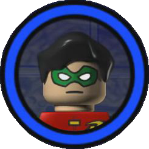

Lego Batman The Video Game

Lançado em 2008 o jogo foi desenvolvido pelas empresas WARNER BROS GAMES e TT Games e também junto com a Lego, quando foi lançado fez um baita sucesso e é coniserado um dos melhores jogos da lego na história, tanto que está no top 5 jogos da lego.
Aqui está o trailer dele
TABELA DOS TOP 5 JOGOS DA LEGO
| TOP 5 JOGOS |
| LEGO MARVEL SUPER HEROES |
| LEGO STAR WARS THE COMPLETE SAGA |
| LEGO INDIANA JONES THE ORIGINAL ADVENTURES |
| LEGO BATMAN THE VIDEO GAME |
| LEGO BATMAN 2:DC SUPER HEROES |
Lista De Personagens do jogo
- BATMAN
- ROBIN
- BRUCE WAYNE
- ALFRED
- BATGIRL
- ASA NOTURNA
- COMISSÁRIO GORDON
- POLICIAL
- PEXEIRO
- POLICIAL MILITAR
- GUARDA DE SEGURANÇA
- S.W.A.T
- MARINHEIRO
- MARCADOR DE POLICIA
- CARA DE BARRO
- SR FRIO
- ERA VENENOSA
- DUAS-CARAS
- CHARADA
- BANE
- MULHER-GATO
- MULHER-GATO(CLASSICA)
- CROCODILO
- MORCEGO-HUMANO
- PINGUIN
- ARLEQUINA
- ESPANTALHO
- CHAPELEIRO LOUCO
- CORINGA
- COGINGA(TROPICAL)
- CAPANGA DA HERA VENENOSA
- VARREDOR DO ZOOLOGICO
- MULHER DO SR FRIO
- YETI
- CAPANGA DO CHARADA
- SEGUNDO CAPANGA DO CHARADA
- CAPANGA DO PINGUIN
- SEGUNDO CAPANGA DO PINGUIN
- MINION PINGUIN
- CAPANGA DO CORINGA
- SEGUNDO CAPANGA DO CORINGA
- TERCEIRO CAPANGA DO CORINGA
- SILENCIO
- RA'S AL GHUL
A BAIXO ESTÁ A IMAGEM DOS PERSONAGENS
UM POUCO SOBRE OS PROTAGONISTAS DO JOGO
Batman:
também conhecido como Bruce Wayne, é um super-herói da DC Comics. Ele é um bilionário que se torna um vigilante mascarado após testemunhar o assassinato de seus pais. Com habilidades de combate excepcionais, inteligência brilhante e acesso a tecnologia de ponta, ele combate o crime em Gotham City. Batman opera a partir da Batcave e utiliza o icônico Batmobile. Ele é conhecido por sua determinação, código de ética rígido e vasta galeria de inimigos notórios.
Robin:
Robin é o fiel parceiro de Batman, assumindo várias identidades ao longo das décadas, incluindo Dick Grayson, Jason Todd, Tim Drake e outros. Ele é um jovem combatente do crime treinado por Batman, compartilhando suas habilidades em artes marciais e dedicação à justiça. O Robin desempenha um papel crucial na dinâmica do Batman e contribui para a riqueza do universo do Cavaleiro das Trevas, tanto como um aliado leal quanto como um herói independente.